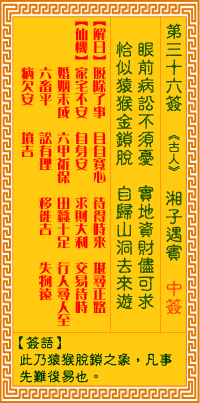

观音灵签第三十六签 【湘子遇宝】 |
 | |||
目前病讼不须忧 实地资财尽可求 恰好系猿今脱锁 得归仙洞去来游 |
||||
| 【吉凶】 | 上上签 | 【宫位】 | 申宫 | |
| 【签语】 | 此卦猿猴脱锁之象，凡事先难后易也。 | |||
| 【解曰】 | 脱除了事 且自宽心 待得时来 堪寻正路 | |||
| 【仙机】 | 此签家宅不安，自身安，求财大利，交易待时，婚姻未成，行人寻人至，六甲祈福，田蚕十足，六畜平，讼有理，移徙吉，失物远，病欠 安，山坟吉。 | |||
| 【详解】 | 此刻的疾病官司不必忧愁，充足的资财尽可以解决问题的需求;就好似猿猴解开了身上的枷锁，得以返回仙洞来去悠游。 脱除心事，且自宽舒，待他时至，路达通衢。此签系猿脱锁之象，凡事通泰。 本签曰。目前病讼不须忧。实地资财尽可求。是上上之签。惟有积德。布施之举。必可更进展之机。如忽尔遇不如意之时。因君汝目下是系猿脱锁之象。凡是通泰。因此。再加修心向善。必有神佑。易言之。且自宽舒待他时至路达通衢也。 此签有”居安思危”之意。提醒当事人，小心行事。人在得到帮助、好运连连或机会来临之时，往往喜不自胜、乐不可支。须知纵然目前看似稳操胜算，有势在必行之意，但切勿过于开怀狂喜，仍应时刻自我警惕”物满则溢、乐极生悲”的道理。冷静下来，仔细审慎地思考接下来该怎么做。在此同时，别忘了兼顾到别人，更不要忽略了他人的感受。应尽量保持平常心，切勿急躁，放慢脚步、顺势而为。 | |||
| 【典故】 | 韩湘子和吕洞宾都是八仙人物。韩湘子是唐朝人，幼而落拓，不读书，好饮酒，后被吕洞宾引渡，同入山修道，成为八仙之一。又传说， 韩湘子是大文学家韩愈（文公）的侄子，韩愈不信佛道，湘子时而点化他，要他悟道。后引渡文公仙去。 | |||